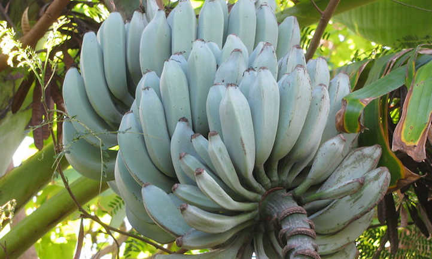

Funky Foods started out as a tiny blog in a tiny corner of the internet and has stayed that way ever since.
Funky Foods was featured on thisnewssite.com and otherbignewssite.com
Funky foods won the award for "Blog least like actual food blog" 10 years in a row!
Mentioned by @thatfamousperson and @thisotherfamousperson !
It's a blog about the weirdest foods ever!
As a child of 16 years of age, I've eaten nearly 18,000 meals!
I also like to eat food, so I decided to write a blog all about food.
I hated normal bananas, so I decided to try something different...
Then I found some weird Fruits and I wanted to share it with others!
so I started Funky Foods Food Blog.
|  | |
 |
Blue Java Bananas, the "ice cream Bananas" are said to taste like vanilla ice cream...and they actually exist!
try it!Pink Pineapples are supposed to have a cotton-candy like flavor... buy them from Dole!
try it!Black Sapote tastes like chocolate pudding, also it sort of reminds me of a Ferrero Rocher.
try it!Buddah's Hand is probably the creepiest looking fruit out there...
try it!I don't know anywhere that sells this stuff as a dish...but...
Donuts, anyone?